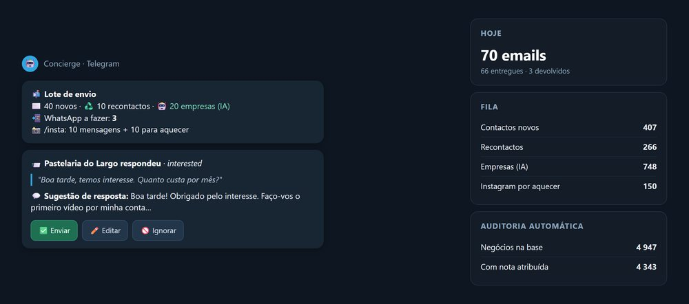
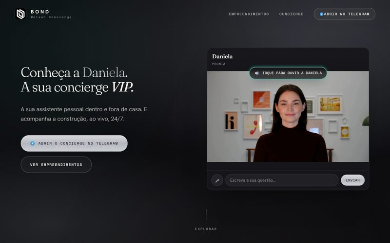
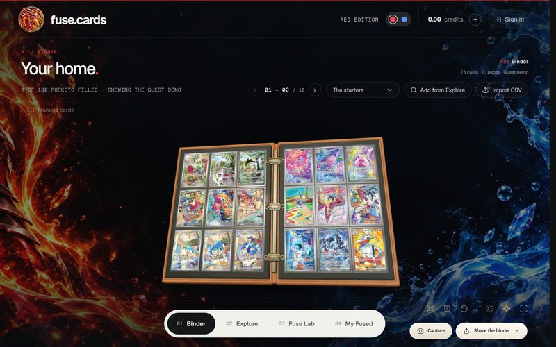
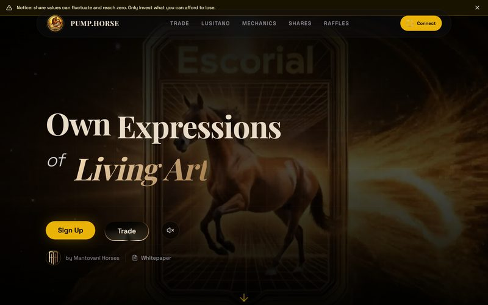
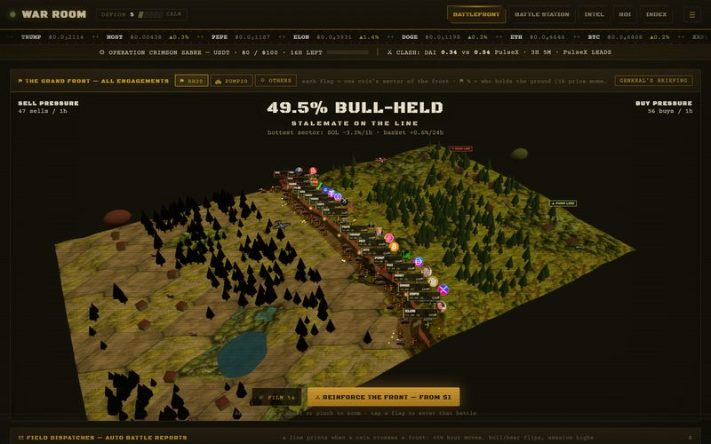
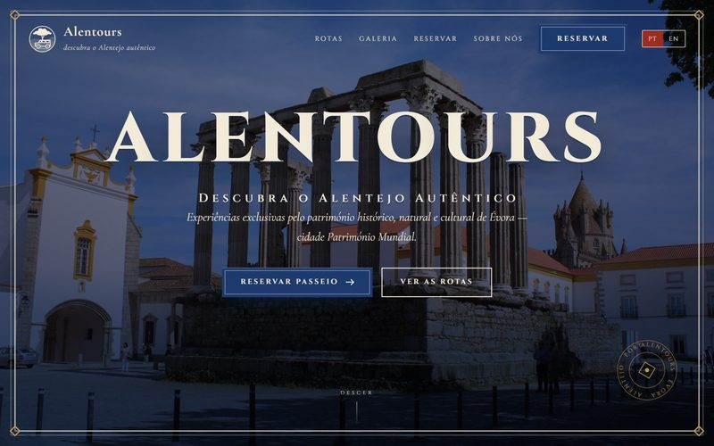
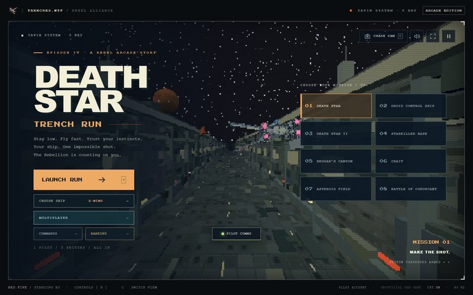

ESTRATÉGIA · IMPLEMENTAÇÃO · IA
Inteligência.
Na prática.
O potencial da IA é extraordinário.
O que faz com ele é que conta.
Sou Pedro Febrero. Economista e tecnólogo. Transformo a inteligência artificial em sistemas que trabalham para o seu negócio.
LISBOA, PORTUGAL · A TRABALHAR GLOBALMENTE
01 / TRABALHO SELECIONADO
Trabalho real.
Impacto concreto.
A prova mais útil que tenho não é uma apresentação: são sistemas meus a correr todos os dias e trabalho já entregue a clientes.
Processos da organização
Uma camada de IA por cima dos sistemas que a empresa já usa: ERP, CRM, email, Excel. Nada para migrar e nada novo para a equipa aprender, por isso a adoção é fácil — e processos que levam dias passam a levar horas.
Ir dos desenhos do arquiteto ao modelo final (quantidades, orçamento, lista de materiais) levava 30 a 60 dias. Com a IA a trabalhar por cima do ERP que a empresa já usava (Cegid Primavera), passou a levar algumas horas — e tudo o que parte desse modelo acelera com ele.
A IA lê e escreve onde a equipa já trabalha, seja qual for o sistema da empresa. Não se migra nada e ninguém tem de aprender software novo: os ecrãs ficam iguais e os passos manuais desaparecem. É por isso que a adoção é rápida.
3 processos
Duas semanas a mapear onde o trabalho manual custa mais, com uma lista curta dos dois ou três processos com retorno mais rápido, cada um com custo e prazo. Depois construo a camada de IA e formo quem a vai usar.
Comunicação e publicidade
Apresentadores sintéticos com voz clonada, animados a partir de uma única imagem, com montagem, música e legendas automáticas. De um guião a um anúncio pronto a publicar em minutos e por poucos euros — é isso que torna viável conteúdo semanal para um negócio pequeno. Há peças deste tipo com mais de 50 mil visualizações.
A concierge do projeto imobiliário apresenta-se e explica o que faz — a mesma personagem que depois responde no Telegram.
Erros de postura explicados em segundos e o convite para a aula experimental. Produzido de ponta a ponta pelo sistema.
Ambiente, mesa e sala cheia gerados por IA, com a marca aplicada — sem sessão de filmagem.
Narrativa, vozes e imagem geradas por IA para a minha própria operação de marketing local.
A apresentadora em bolha sobre as imagens do próprio centro, com guitarra portuguesa por baixo.
Seis segundos: onde fica a clínica, para quem é, e o convite para marcar.
Exercício explicado sobre imagens reais do estúdio — o formato que alimenta as redes todas as semanas.
Animação em estilo desenho, feita por IA, do género que corre nas redes e traz alcance sem orçamento de meios.
Formatos curtos para um movimento com mais de meio milhão de seguidores, feitos para circular nas redes.
Captação de clientes e vendas
Sistemas que encontram o cliente, falam com ele e só me passam a decisão.

Uma base de cerca de 4.900 empresas, com auditoria automática da presença online de cada uma. O sistema escolhe quem contactar, escreve a mensagem adaptada ao negócio, envia em horários definidos, lê as respostas, classifica-as e prepara a resposta — que só sai depois de eu aprovar no telemóvel. Entregas, aberturas e devoluções são medidas e realimentam as regras.
Assistentes para gerir o negócio: fala-se com eles por mensagem ou por voz, respondem sobre o que está a acontecer na empresa, acompanham mercados e preparam ou executam ordens de compra e venda.

Uma concierge com voz e vídeo responde no Telegram, apresenta os empreendimentos e acompanha a obra ao vivo, 24 horas por dia.
Página de apresentação e venda do livro de Afonso Gonçalves sobre política de imigração, com o contexto e a proposta do autor.
Comércio e retalho
Transformar conteúdo e coleções em algo que se compra num toque.
Cada peça de roupa vista nos programas fica à venda num toque, organizada por concorrente e por episódio.

Organiza a coleção por páginas, importa listas de cartas e funde duas numa nova, no laboratório de fusão.
Ativos, mercados e Web3
Onde a economia do ativo é o produto: desenho económico, mercado e a plataforma que o suporta.

Plataforma da Mantovani Horses: exposição fracionada a cavalos lusitanos de alta competição, com histórico de valorização, participações e sorteios.

Preços ao vivo, índice de retorno e um mapa de batalha que mostra onde está a pressão de compra e de venda.
Turismo e experiências web
Sites que vendem a experiência, e experiências que só existem no browser.

Para uma empresa familiar de Évora: passeios de Land Rover pelo Alentejo, com rotas, galeria e marcação online em português e inglês.

Corrida 3D pela trincheira, com multijogador e classificações — um teste ao que cabe dentro de uma página web.
02 / A PERSPETIVA
O problema para que costumo ser chamado
A maioria das empresas que se aproxima da IA fica entre dois maus conselheiros: um vende uma demonstração que nunca chega a produção; o outro vende uma apresentação de estratégia sem ideia do que custa implementar.
Passei nove anos no meio pouco glamoroso desse problema, com uma tecnologia que chegou uma década antes e cometeu os mesmos erros. Que processos vale mesmo a pena automatizar. Quanto custa a integração. O que é que parte. Quem precisa de formação e quem resiste em silêncio. Fui economista antes de ser tecnólogo, por isso avalio trabalho em período de retorno — e depois dirigi a equipa que teve de o entregar.
Por onde começa cada setor
03 / COMO TRABALHO
Da oportunidade
à operação.
Sobre financiamento: nos apoios do PRR e do Portugal 2030 para digitalização e IA, a consultoria e a formação contam como despesa elegível, e não apenas o software. Quem já tem projeto aprovado tem prazo para executar e obrigação de o documentar — que é exatamente onde entro.
04 / PERCURSO
Economista de formação.
Tecnólogo por natureza.
Responsável pela tecnologia da empresa.jan 2026 —
Direção da área de blockchain e arquitetura de soluções para clientes.2025 —
Estratégia técnica de Web3 numa plataforma de NFT desportivos: roteiro, equipa que o entregou e o argumento comercial dos dois.2022 — 2024
Criou a função do zero: contratação, ferramentas, arquitetura e os contratos inteligentes por trás do mercado de NFT. O arco completo até produção.2019 — 2022
Sete anos a ensinar blockchain, economia das criptomoedas e DeFi a alunos e a executivos.2018 — 2025
O programa de criptomoedas com mais audiência em Portugal.2020 —
Blockchain e DeFi.2024 —
Formação e investigação
Licenciatura em Economia
ISCTE Business School, Lisboa · 2008–2013
Assistente de investigação em blockchain na cadeia de abastecimento, University of Huddersfield (2019).
Journal of Management in Engineering (ASCE), 2021
DOI 10.1061/(ASCE)ME.1943-5479.0000939
IEEE Transactions on Engineering Management, 2020
DOI 10.1109/TEM.2020.3030202
VAMOS CONVERSAR
O próximo passo
começa com uma conversa.
Vinte minutos. Uma oportunidade real.
Diga-me o que a sua equipa faz mais vezes por semana. Digo-lhe se há aí um caso de IA que se pague — e se não houver, também lho digo.
Escrever um email WhatsApp 936 882 364STRATEGY · IMPLEMENTATION · AI
Intelligence.
Made real.
AI has extraordinary potential.
What you do with it is what matters.
I’m Pedro Febrero. Economist and technologist. I turn artificial intelligence into systems that work for your business.
LISBON, PORTUGAL · WORKING WORLDWIDE
01 / SELECTED WORK
Real work.
Real-world impact.
The most useful proof I have is not a slide deck: it is systems of mine running every day, and work already delivered for clients.
Organisational processes
An AI layer on top of the systems the company already runs: ERP, CRM, email, spreadsheets. Nothing to migrate and nothing new for the team to learn, so adoption is easy — and processes that take days start taking hours.
Going from the architect's drawings to the final model (quantities, cost estimate, materials list) took 30 to 60 days. With AI working on top of the ERP the company already used (Cegid Primavera), it now takes a few hours — and everything that starts from that model speeds up with it.
The AI reads and writes where the team already works, whatever the company uses. Nothing is migrated and nobody has to learn new software: the screens stay the same and the manual steps disappear. That is why adoption is fast.
3 processes
Two weeks mapping where manual work costs the most, ending in a shortlist of the two or three processes with the fastest return, each with its cost and timeline. Then I build the AI layer and train the people who will use it.
Communication and advertising
Synthetic presenters with cloned voices, animated from a single still image, with automated editing, music and captions. From script to a publishable ad in minutes and for a few euros — which is what makes weekly content viable for a small business. Pieces like these have passed 50,000 views.
The development's concierge introduces herself and explains what she does — the same character who then answers on Telegram.
Posture mistakes explained in seconds, then the invitation to a trial class. Produced end to end by the system.
Room, table and full house generated by AI, with the brand applied — no shoot required.
Story, voices and footage generated by AI for my own local-marketing operation.
The presenter in a bubble over the centre's own footage, with Portuguese guitar underneath.
Six seconds: where the clinic is, who it is for, and the invitation to book.
An exercise explained over real footage of the studio — the format that feeds the social accounts every week.
Cartoon-style AI animation, the kind that travels on social and buys reach without a media budget.
Short formats for a movement with more than half a million followers, built to travel on social media.
Client acquisition and sales
Systems that find the customer, talk to them, and hand me only the decision.
A database of roughly 4,900 companies, each with an automated audit of its online presence. The system picks who to contact, writes a message fitted to that business, sends on a schedule, reads the replies, classifies them and drafts the answer — which only goes out once I approve it from my phone. Deliveries, opens and bounces are measured and feed back into the rules.
Assistants for running the business: talk to them by message or by voice, ask what is going on in the company, follow markets, and prepare or execute buy and sell orders.
A concierge with voice and video answers on Telegram, walks buyers through the developments and follows the construction live, around the clock.
Landing and sales page for Afonso Gonçalves' book on immigration policy, with the author's context and proposal.
Commerce and retail
Turning content and collections into something you can buy in one tap.
Every garment worn on the shows is buyable in one tap, organised by contestant and by episode.
Organise a collection across pages, import card lists, and fuse two cards into a new one in the fuse lab.
Assets, markets and Web3
Where the asset's economics are the product: economic design, the market, and the platform under it.
Mantovani Horses' platform: fractional economic exposure to elite Lusitano dressage horses, with price history, shares and raffles.
Live prices, a return index and a battle map showing where the buying and selling pressure sits.
Tourism and web experiences
Sites that sell the experience, and experiences that only exist in the browser.
For a family business in Évora: Land Rover tours across the Alentejo, with routes, gallery and online booking in Portuguese and English.
A 3D trench run with multiplayer and leaderboards — a test of how much fits inside a web page.
02 / THE PERSPECTIVE
The problem I am usually called about
Most organisations approaching AI are stuck between two bad advisers. One sells a model demo that never reaches production. The other sells a strategy deck with no idea what implementation costs.
I spent nine years in the unglamorous middle of exactly that problem, for a technology that arrived a decade earlier and made all the same mistakes. Which processes are genuinely worth automating. What the integration really costs. What it breaks. Who needs retraining, and who quietly resists. I was an economist before I was a technologist, so I scope work in payback period rather than parameter count — and I then ran the engineering division that had to deliver it.
Where each sector starts
03 / HOW I WORK
From opportunity
to operation.
On funding: under Portugal's PRR and Portugal 2030 digitalisation and AI support lines, consultancy and training are eligible spend, not only software. Companies with an approved project have a deadline to execute and an obligation to document it — which is exactly where I come in.
04 / TRACK RECORD
Economist by training.
Technologist by nature.
Responsible for the company's technology.Jan 2026 —
Runs the blockchain division; sets research direction and architects bespoke solutions for clients.2025 —
Owned technical strategy for Web3 across a sports NFT platform: the roadmap, the division delivering it, and the commercial argument for both.2022 — 2024
Built the function from nothing: hiring, tooling, architecture and the smart contract ecosystem behind the NFT marketplace. The full zero-to-production arc.2019 — 2022
Seven years teaching blockchain, cryptocurrency economics and DeFi to students and executives.2018 — 2025
Portugal's most-followed cryptocurrency show.2020 —
Blockchain and DeFi.2024 —
Education and research
BSc Economics
ISCTE Business School, Lisbon · 2008–2013
Research assistant, supply-chain blockchain, University of Huddersfield (2019).
Journal of Management in Engineering (ASCE), 2021
DOI 10.1061/(ASCE)ME.1943-5479.0000939
IEEE Transactions on Engineering Management, 2020
DOI 10.1109/TEM.2020.3030202
LET’S TALK
Your next chapter
starts with a conversation.
Twenty minutes. One real opportunity.
Tell me what your team does most often in a week. I will tell you whether there is an AI case in there that pays for itself — and if there is not, I will tell you that too.
Send an email WhatsApp +351 936 882 364